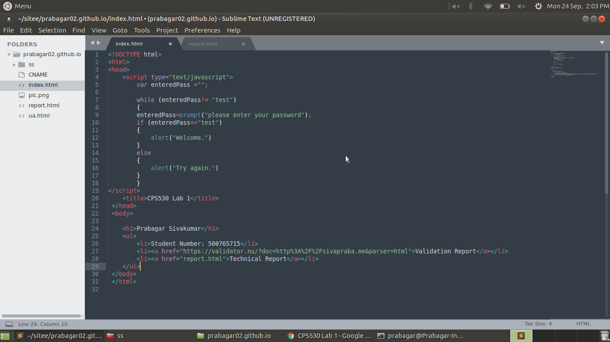

How did you password protect your page?
I decided to code a simple script in javascript and incorporate it into my html page since
it was the most simplest way to password protect the site. I used javascript to prompt a
password dialog pop up box which simply takes the user input and compares it to the value of a
password variable that i created.
What new tag did you try? What was its effect?
The new tag that I tried out was the script tag, which allows you to create a script that will be
executable in html. This tab allowed me to use javascript to create a pop up box when entering
the site.
Does your page look different on different browsers?
No. Since this site does not have any modified css and just contains text, the site looks the
same on different browsers since there is technically no “design” to the site.
How long did you spend on this lab?
Around 20-30 minutes.